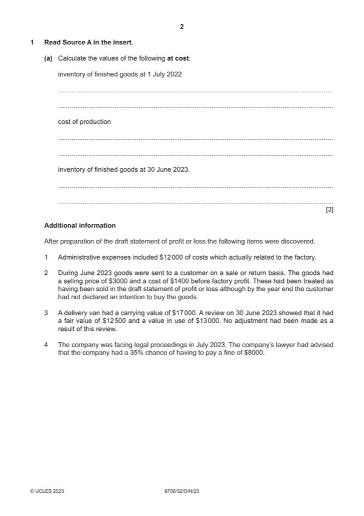

Question 1

Original paper page 2
Part 1(a) — solution
- Inventory of finished goods at 1 July 2022 = 20 000 (1)
- Cost of production = 190 000 (1)
- Inventory of finished goods at 30 June 2023 = 22 000 (1)
Mark points
- Inventory of finished goods at 1 July 2022 = 20 000 (1)
- Cost of production = 190 000 (1)
- Inventory of finished goods at 30 June 2023 = 22 000 (1)
Part 1(b) — solution
Prepare a corrected statement of profit or loss for the year ended 30 June 2023. 13
H plc
Statement of profit or loss for the year ended 30 June 2023
$ $
Revenue (370 – 3) 367 000 (1)
Inventory of finished goods at 25 000
Mark points
- Include the ideas shown in the solution above.
Part 1 — solution
July 2022
Cost of production W1 252 500 (2)
Inventory of finished goods at (29 250) (2)
Mark points
- Include the ideas shown in the solution above.
Part 1(c) — solution
Answer: OR prudence (1)
State the accounting concept being applied in the treatment of the goods sent on a sale or return basis in item 2. 1
realisation (1)
OR prudence (1)
Mark points
- Correct result: OR prudence (1)
Part 1(d) — solution
- liability (1) and should be disclosed in a note (1) to comply with IAS37 (1)
Mark points
- liability (1) and should be disclosed in a note (1) to comply with IAS37 (1)
Part 1(e) — solution
Advise the directors whether or not to stop the application of factory profit. Justify your answer. 5
Not stopping (max 2)
It can be a motivator (1) and help in setting staff bonuses / performance appraisal (1). It enables the transfer cost to shadow
the costs of buying goods in / can be used to set selling price (1).
Stopping (max 2)
The rate can be arbitrary (1) and its application can increase administration and accounting costs (1). It does not affect the
overall profit of the business as it is included both as an extra cost and an extra income (1).
Accept other valid responses.
Decision supported by a comment (1)
Mark points
- Include the ideas shown in the solution above.
Part 1 — solution
January 2022 17 000 }
Cash and cash equivalents on } (1)both w+f
Mark points
- Include the ideas shown in the solution above.